Yozuvlar
Maqolalar
Din, axloq, oila, til, kitob va millat haqida mushohadalar. Jami 224 ta maqola.
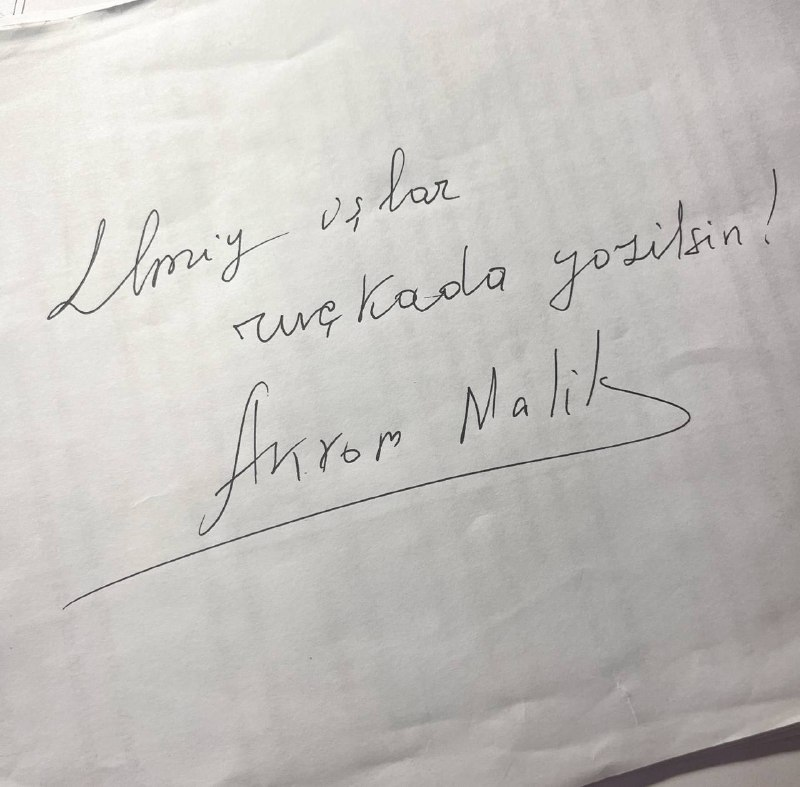
Yana bir taklif: hozir ilmiy işlarni sun’iy intellekt yozib berayotgan ekan.
Yana bir taklif: hozir ilmiy işlarni sun’iy intellekt yozib berayotgan ekan. Hurmatli Özbekiston Fanlar akademiyasi va jumhuriyatimizdagi jamiki ilmiy kengaşlarga…

Musibatlarning hajmi Allohdan uzilganing qadar böladi
Tasavvuf rizo maqomini örgatadi. Taqdirning boşingga kelgan har bir işiga rizo böl. Musibatmi, yöqotişmi, ahamiyatsiz — qalbing undan ozor çekayotgan bölsa, bu Haq taolo…

Havas qilganing odamdan yiroq tur degan gap – jaholat belgisi, balki ixlossiz qalb…
Havas qilganing odamdan yiroq tur degan gap – jaholat belgisi, balki ixlossiz qalb dalolatidir. Yaqindan ham, uzoqdan ham ergaşaman deganing insonga muhabbating qoyim…

Boşimizga tuşgan oğir vaziyatlarda nima iş qilişimiz kerak?
Boşimizga tuşgan oğir vaziyatlarda nima iş qilişimiz kerak? Maqbul axloq inkişofi İkkinçi qism Bu mavzuda yaxşi tavsiyalar yozilgan edi, alhamdu lilloh. Ammo bugun…

Boşimizga tuşgan eng oğir vaziyatlarda nima qiliş lozim?
Boşimizga tuşgan eng oğir vaziyatlarda nima qiliş lozim? Maqbul axloq inkişofi 1. Eski döst bölib, endi duşmanga aylangan odam haqida gapirmaslik. Çunki – ertaga qayta…
İman invest mojarosidan körilgan foydalar:
1. Musulmonlarning bahs madaniyati qançalik şaffof va xolisligi körindi: muxolif taraflar imkon qadar adab çegarasida tura oldilar. 2. Musulmonlar bir-birlarini…
Hamisha sizlarni eslab, haqqingizga duo qilmoq biz shogirdlar burchidir. Ammo…
Hamisha sizlarni eslab, haqqingizga duo qilmoq biz shogirdlar burchidir. Ammo maxsus kun ustozlar uchun atab ajratilsa, bu baribir yaxshi ekan – bevafo dunyoning…
Qadrdonlarning xabari bor: "Ozod inson falsafasi" degan kitobni yozishni…
Qadrdonlarning xabari bor: "Ozod inson falsafasi" degan kitobni yozishni boshlaganmiz. E'tiboringizga 2-bobni havola etamiz. Oldindan ogohlantirmoqchimiz: bu bobda…

Inna lillahi va inna ilayhi rojiun.
Inna lillahi va inna ilayhi rojiun. Imom Buxoriy nomidagi Xalqaro ilmiy tadqiqot markazida Yo'ldoshxon Isayev domla ishlar edilar. O'ta kamtar, samimiy, kirishimli…
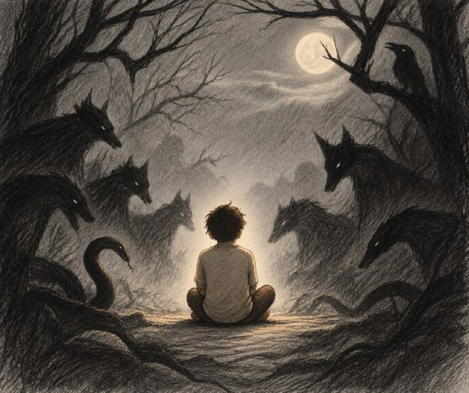
Ozod inson falsafasi
Birinchi bob Manzara Hozirgi kunda kuzatilayotgan holat, menimcha, bunday: yoshi kattalarda mas’uliyat hissi kamaygan, ular yosh avlod, xususan, o‘z farzandlari kelajagi…

Ozod inson falsafasi
Kirishso‘z Qo‘liga qalam berilgan odam jamiyatdagi savollarga javob izlaydigan odamdir. Boshqalarni qiynab turgan masalalarni hal qilish bilan shug‘ullanadi. Shu ma’noda…
Hikoyat: Shayx Saʼdiy aytur: “Bir zohidni koʻrdum bir mahbub…
Shayx Saʼdiy aytur: “Bir zohidni koʻrdum bir mahbub muhabbati bilan giriftor bo‘lib malomat ko‘rub gʻaromat chekib tarkin urmadi. She'r Yo‘lunda yosh oʻynab jon tarkin…
Hikoyat: Hotam Toyiga aytdilar: “Jahonda sendan ulug‘ himmatli…
Hotam Toyiga aytdilar: “Jahonda sendan ulug‘ himmatli ko‘rganing yo eshitganing bormi?”. Aytdi: “Bir kun qirq tuya qurbon etib, arab beklarin qo‘noqladim. Hojat uchun…
Hikoyat: Amr ibn Lays qullarindan bir qul qochti. Ortincha borib…
Amr ibn Lays qullarindan bir qul qochti. Ortincha borib tutub keturdilar. Bir vazirning, aning bilan g‘arazi bor edi, aytdi: “Muni o‘ltirmak kerakkim, dag‘e o‘zga qullar…
Hikoyat: Bir Sultonning uch oʻgʻli bor edi, ikkisi uzun boʻyli…
Bir Sultonning uch oʻgʻli bor edi, ikkisi uzun boʻyli, sohib jamol dagʻi biri qisqa boʻyli edi. Bir kun sulton bu qisqa boʻyli oʻgʻlina haqorat koʻzi bilan boqti…
Hikoya: Maliklardan bir malikga ranj hosil bo‘ldi. Ul valoyatning…
Maliklardan bir malikga ranj hosil bo‘ldi. Ul valoyatning hokimlari jam bo‘lub ayttilar: “Bu ranjning davosi degul. Illo odamining o‘ti dag’i ul odamiy muncha turlu…
4. Aqlga suyaning. Tuyg‘ularni chetga suring. Chunki hozir tuyg‘ularning pokligi…
4. Aqlga suyaning. Tuyg‘ularni chetga suring. Chunki hozir tuyg‘ularning pokligi yo‘qolgan. Shu sababli hamisha xotirjam bo‘lish uchun aqlni ilgari qo‘ymoq maqbul…
Hikoyat: Bir yaxshi er tatar urushinda ogʻir jarohatli boʻldi. Bir…
Bir yaxshi er tatar urushinda ogʻir jarohatli boʻldi. Bir kishi anga aytdi: “Sening bu jarohating davosi falon xojaning qatinda bor. Borib tilasang, bo‘lgʻaykim, andan…
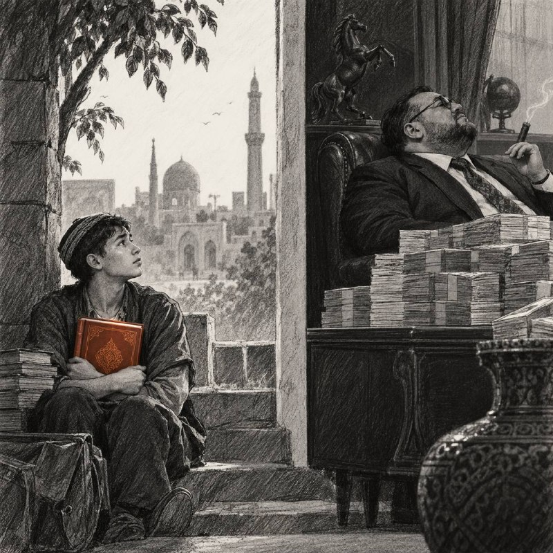
Ba’zan ilm olishga qobiliyati va salohiyati bor, lekin sharoiti yoʻq yoshlarni…
Ba’zan ilm olishga qobiliyati va salohiyati bor, lekin sharoiti yoʻq yoshlarni koʻrib, ularga yordam berishni istaysan. Yordam beray deysan-u, imkoning haminqadar…
Do‘stlik ilmi
Do‘stlik insoniylikdandir. Ko‘zingga yoqqan har kim ham do‘st chiqmaydi. Do‘stlik neligini bilmaydigan baxtsizlar bilan bu jahon to‘lib-toshgan. Ha, do‘stlik nimaligini…
O‘limning qayg‘usi katta, ayriliq yuki undan katta, bu ikki alam oilaning har bir…
O‘limning qayg‘usi katta, ayriliq yuki undan katta, bu ikki alam oilaning har bir a'zosining qalbini kuydiradi, mana shu paytda kelib ta'ziya bildirish, ko‘ngil so‘rash…
Hikoyat: Shayx Sa'diy aytur: bir kimarsa bilan yillar safarda va…
Shayx Sa'diy aytur: bir kimarsa bilan yillar safarda va hazarda birga bo‘lub, o‘rtamizda ko‘p ne'mat va suhbat haqqi sobit edi. Oxir bir kun oz naf uchun xotirim ozorin…
Toparmon-tutarmon erga, hayo va iffatli, ro‘zg‘orparvar va sadoqatli xotinga…
Toparmon-tutarmon erga, hayo va iffatli, ro‘zg‘orparvar va sadoqatli xotinga hamisha jufti halol chiqadi. Aksincha, yengiltak va qosh-ko‘zini bo‘yab, o‘zini bozorga…
Ulug‘larni tahqirlash javobsiz qolmaydi
Muhammad ibn Sirin aytadi: “Bir kuni hajda Ka’bani tavof qilayotgan edim, yonimdagi kishining: “Ey Robbim! Menga rahm qil! Lekin mening gunohimni kechirmasang kerak!.."…
Hikoyat: Shayx Sa’diy aytur: safarda edim. Bir kecha karvon tun qato…
Shayx Sa’diy aytur: safarda edim. Bir kecha karvon tun qato yurub, sahar vaqtin kelib, bir o‘rmon yoninda qo‘ndilar. Yo‘ldoshlarimizdan bir faqir na’ra urdi, dag‘i…
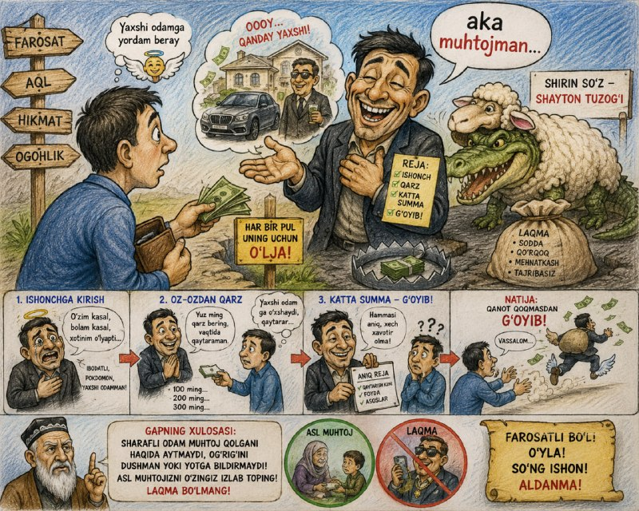
Firibgarlar hiylasi
Erkak kishi aldanib qolishi uning sha’ni va darajasi uchun munosib emas. Chunki erkak degani bu eng avvalo farosat, aql va hikmatni uyg‘unlashtirgan inson demakdir…
Bugungi O'zbekiston ochiq yerda paydo bo'lgan emas, balki u mavjud davlatchilikning…
Bugungi O'zbekiston ochiq yerda paydo bo'lgan emas, balki u mavjud davlatchilikning uzviy davomi bo'lib, uzoq ming yillik tariximiz ustida barpo bo'lgan. Agar xalq…
Ustoz Akrom Malik bilan oʻtgan “Gunohlar va tavbalar” suhbati xususida koʻplab…
Ustoz Akrom Malik bilan oʻtgan “Gunohlar va tavbalar” suhbati xususida koʻplab mushtariylardan ijobiy xatlar oldik. Mana shunday ma’rifiy suhbatlarga ehtiyoj borligi…
Hikoyat: Bir malik bilan tengiz ko‘rmagan halab qul kemaga kirib…
Bir malik bilan tengiz ko‘rmagan halab qul kemaga kirib o‘lturdi. Ul qul chun tengiz ko‘rmagan dag‘i kema zahmatin chekmagan edi. Tahammul eta bilmadi qatti un bilan…
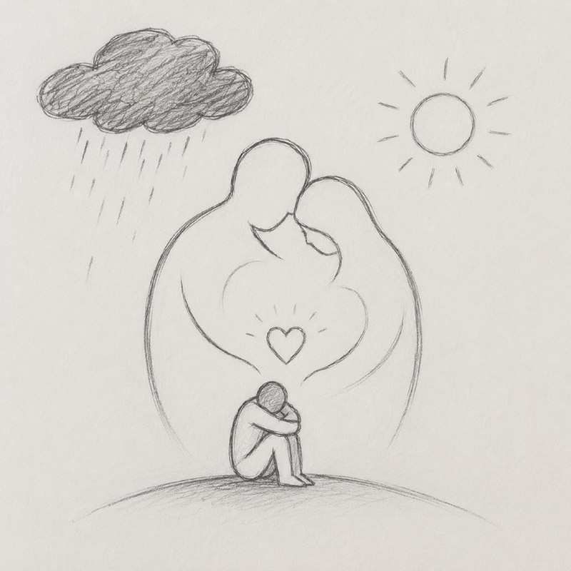
Dunyoning og‘ir yuki – g‘amdir. U yurakni charchatadi, ruhni toliqtiradi, hatto…
Dunyoning og‘ir yuki – g‘amdir. U yurakni charchatadi, ruhni toliqtiradi, hatto horigan ruh o‘zini tashlab yuboradi, tik turgisi kelmaydi, shu sababli qayg‘uli odamlar…
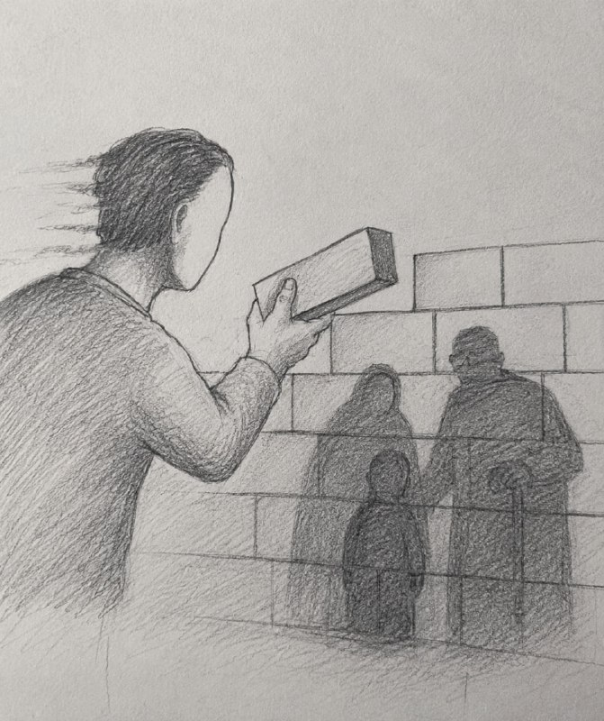
Ertak: (Hikoya)
(Hikoya) Bir inson qirq yoshga kiribdi. Jismi kuchga to‘lib, aqli kamolga yetibdi. Qo‘lidan kelmaydigan ish yo‘q ekan: tog‘ni ursa talqon qilar emish. Chunki u asilzoda…
Haqiqatning badali
Bu dunyo yolg‘onga to‘lib-toshganini bilasanmi? Chunki yolg‘on shirin. Haqiqat – achchiq. Yolg‘on nafsning talabi, haqiqat Haqning talabi. Banda dunyoga Haqni sevmoq…
Kuzatuvchilarimiz xabardor: 2021-yildan beri “Mahalla” radiokanali bilan…
Kuzatuvchilarimiz xabardor: 2021-yildan beri “Mahalla” radiokanali bilan hamkorlikda hazrat Navoiy asarlarini sharhlanib, “Ma’rifat chiroqlari” eshittirishi orqali…
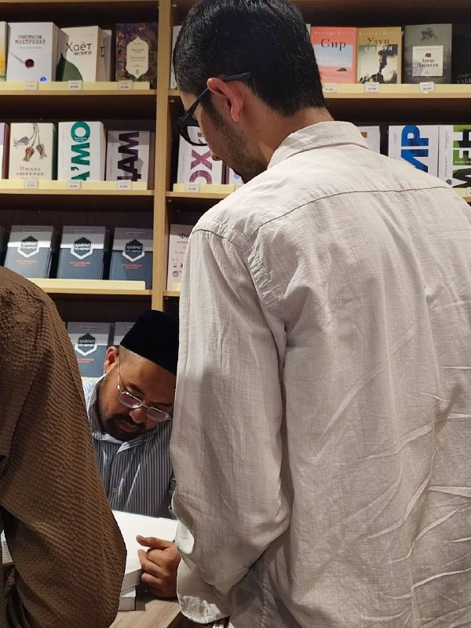
So‘zimni Allohning ismini zikr qilgan holda ko‘z tegmasin deb boshlayman.
So‘zimni Allohning ismini zikr qilgan holda ko‘z tegmasin deb boshlayman. Xalqqa xizmat qiladiganlar haqida gapirish biram maroqli. Chunki ular millat haqidagi yoqimsiz…
Bugun Sizlarga shayx Mirzo Ahmad Xushnazar Termiziy haqida aytib beraman.
Bugun Sizlarga shayx Mirzo Ahmad Xushnazar Termiziy haqida aytib beraman. Bu kishining ismi — Mirzo Kenjaboyevdir. Mirzo aka 1956-yil 20-fevral kuni tug'ilgan…
Ustoz adabiyotshunos, filologiya fanlari doktori, professor Bahodir Karim…
Ustoz adabiyotshunos, filologiya fanlari doktori, professor Bahodir Karim ajdodlarimiz qo'llagan turkiy alifboni eski emas, mumtoz deb atashni taklif etmoqdalar. Bu…
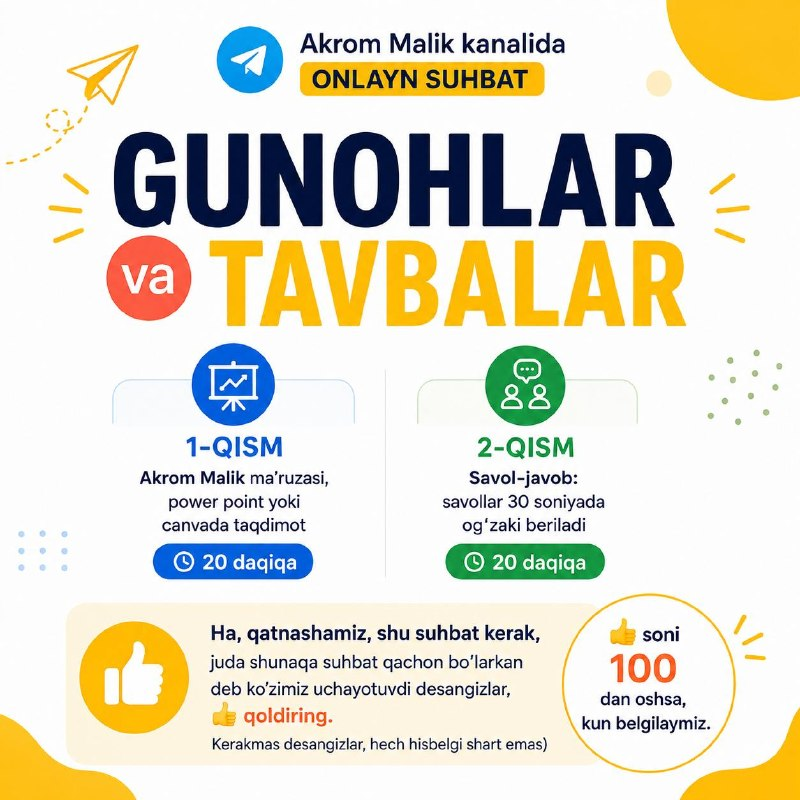
Akrom Malik bilan ushbu kanalda biror mavzuda, masalan, “Gunohlar va tavbalar”…
Akrom Malik bilan ushbu kanalda biror mavzuda, masalan, “Gunohlar va tavbalar” degan mavzuda suhbat boʻlsa, ne deysizlar? Suhbat shakli: online, telegramda — Akrom Malik…

Umr odamning qo‘lidan mahkam tutib ketib bormoqda. Inson yosh boladek unga…
Umr odamning qo‘lidan mahkam tutib ketib bormoqda. Inson yosh boladek unga ergashishga mahkum. Lekin vaziyatni biroz fojiali tasvirlasak, bunday manzara ko‘rinadi – umr…

Shunday qilib, har kim ko‘rpani o‘ziga tortsa, nima bo‘ladi, o‘rtoqlar?
Shunday qilib, har kim ko‘rpani o‘ziga tortsa, nima bo‘ladi, o‘rtoqlar? Adabiy til – xalqni birlashtiruvchi omildir. Chunki yurt – katta, odamlar turli-tuman shevalarda…
Qadronlar biladilarki, "Hayratul abror" dostoniga yozilgan sharh chop etildi…
Qadronlar biladilarki, "Hayratul abror" dostoniga yozilgan sharh chop etildi, tarqaldi, Xudoga shukur. Bunga ham 4 yil o'tdi. Endi "Farhod va Shirin" sharhiga…
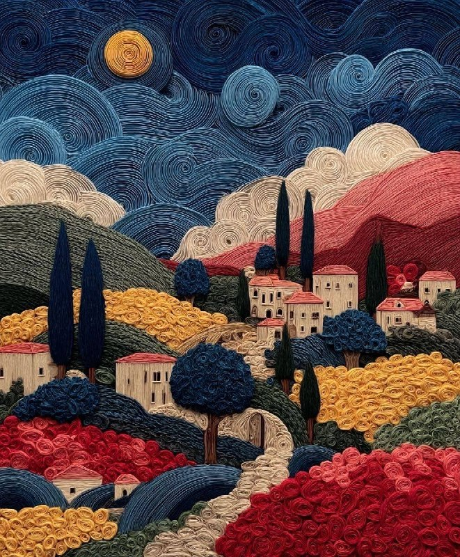
Barqaror va beqaror
Bir savol o‘rtaga chiqib qoldi: beqaror odamning sifatlari qanday bo‘ladi? Tajribadan kelib chiqib aytildiki, beqaror odam vaziyatni to‘liq hisobga olmay qaror qiladi…
“Eringga qul boʻlma, oʻzing boʻlib qol, sen choʻri emassan, orzularingga erish, sen…
“Eringga qul boʻlma, oʻzing boʻlib qol, sen choʻri emassan, orzularingga erish, sen bola tugʻadigan inkubator emassan, qaynonaga xizmat qilish majburiyati mavjud emas”…

Har kun tongda biror matn e’lon qilib turilgan edi, lekin ayrim ishlarga vaqt…
Har kun tongda biror matn e’lon qilib turilgan edi, lekin ayrim ishlarga vaqt ajratilishi zaruratidan bu matnlarga sarflanadigan daqiqalarni tejashga harakat qilindi…

Gunohkorga maktub
Kel, hamdard. Sen bilan bir dardlashaylik. Azizim, men farishta emasman. Farishta bo‘lishga da’voyim ham yo‘q. Qop-qora tuproqdan yaralgan odamning zurriyodiman…
Dasturlashni o'rganishda qiynalyapsizmi?
Dasturlashni o'rganishda qiynalyapsizmi? Dasturlashni oson usulda o'rganishni xohlaysizmi? Muammo ko'pincha dasturlash tilida emas, algoritmlarni tushunishda bo'ladi. 📘…
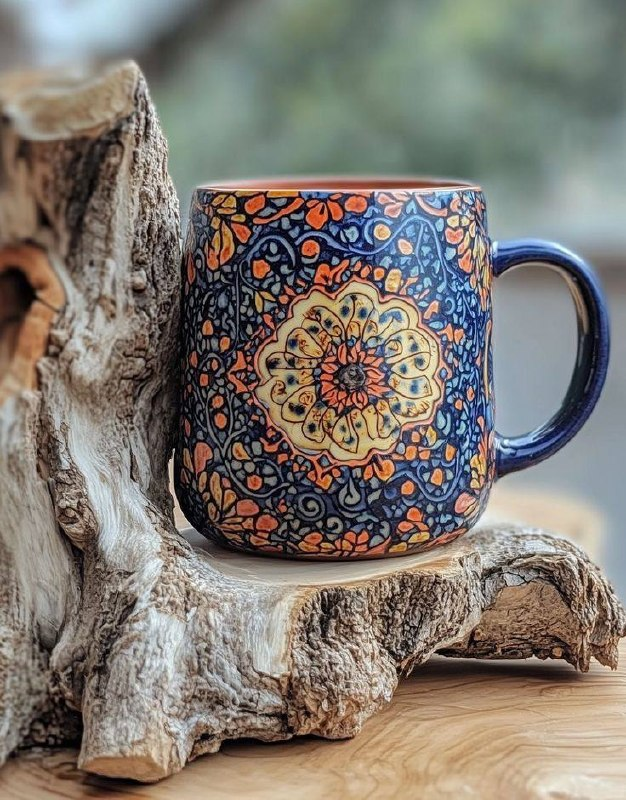
Haqiqatdan çalğima
Hayotda eng töğri yölni tanlaşga intiliş insonga xosdir. Qilayotgan işlarining qaysidir jihati xato va nuqsonli ekanligini his qilib yaşaş oğir. Aslida, öz amallarini…
Bu masalaning bir tomoni. Ikkinchi tomoni shuki, ibodat ma’rifat bilan birga…
Bu masalaning bir tomoni. Ikkinchi tomoni shuki, ibodat ma’rifat bilan birga tirikdir. Bu degani inson ibodat bilan bir qatorda uning mohiyati va zaruratini o‘rganib…
Endi esa mehmonnavozlik adablarini bayon qilsak.
Endi esa mehmonnavozlik adablarini bayon qilsak. 1. Mezbonni ochiq chehra bilan kutib olinadi, mehmon kelganda uyda bolalardan kimdir xato qilsa, hech kimga tanbeh…
2. Xo‘jalik asboblari. Oshxona buyumlari ayollarning quroli bo‘lsa, erkaklar uchun…
2. Xo‘jalik asboblari. Oshxona buyumlari ayollarning quroli bo‘lsa, erkaklar uchun xo‘jalik asboblari xizmat qiladi: ketmon, belkurak, buragich (otvertka), ombir…
Taomlarni aralashtirib yeb bo‘lmagani kabi bir-biriga ma’nosi zid bo‘lgan…
Taomlarni aralashtirib yeb bo‘lmagani kabi bir-biriga ma’nosi zid bo‘lgan narsalarni o‘qish, eshitish va ko‘rish ham qalb va xayolni chalg‘itib yuborishi tabiiydir…
Shunday qilib, yemak uchun halol pul sarflash kerakligini esladik, endi kartoshka…
Shunday qilib, yemak uchun halol pul sarflash kerakligini esladik, endi kartoshka, piyoz-u sabzini archib, ovqatga solishdan avval ularning har birini uch marta ustida…
Insonlar boşiga şunday zamonlar keladiki, unda oyoq mahorati boş mahoratidan…
Insonlar boşiga şunday zamonlar keladiki, unda oyoq mahorati boş mahoratidan, aqldan ustun hisoblanadi. Unda, yolğonçi kazzoblarning gapiga işoniladi, rostgöylar heç…
katta va kichik xarajat deb atalgan narsalar bor. Kichik xarajatlarni ona ham idora…
katta va kichik xarajat deb atalgan narsalar bor. Kichik xarajatlarni ona ham idora qiladi, lekin katta xarajatlarni ota hal qilmog‘i shart. Agar oila yosh bo‘lsa…
Bizning shaxsiy (aslida, tarixdan kelgan tajriba) tavsiya shulki, bolangizga…
Bizning shaxsiy (aslida, tarixdan kelgan tajriba) tavsiya shulki, bolangizga ajdodlarimiz o‘rgangan eski turkiy alifboni o‘rgating, keyin oz-ozdan ikki-uch yil vaqt…
4. Bola yiqilishi, sho‘xlik qilishi tabiiy, lekin ota-ona o‘zini shunday tutishi…
4. Bola yiqilishi, sho‘xlik qilishi tabiiy, lekin ota-ona o‘zini shunday tutishi kerakki, bola erkatoylik chegarasi borligini o‘zi tushunsin. Ammo bu chegara baqirish…
Agar go‘daklar, qariyalar, bechoralar, nogiron va kasallar oramizda bo‘lmasa, bizga…
Agar go‘daklar, qariyalar, bechoralar, nogiron va kasallar oramizda bo‘lmasa, bizga ilohiy shafqat yog‘ilmay qoladi, to‘xtaydi, balki osmondan toshlar yog‘adi. Va umuman…
1. Bola beshik ichida yaxshi uxlaydi, chunki beshik yopinchig‘i buni ta’minlaydi…
1. Bola beshik ichida yaxshi uxlaydi, chunki beshik yopinchig‘i buni ta’minlaydi – qorong‘uda osuda maskanda go‘dak xotirjam orom oladi. 2. Chaqaloq, odatda, ko‘p…

Butlar toshdan, loydan, gipsdan, yogʻochdan yasaladi.
Butlar toshdan, loydan, gipsdan, yogʻochdan yasaladi. Yana shunday but bor, unga na qoʻl tegadi, na koʻz. U insonning ichida quriladi. Uni sindirish uchun bolta kerak…
Musulmonlar yer va osmon ishi Allohning iznida ekanligini yaxshi biladilar.
Musulmonlar yer va osmon ishi Allohning iznida ekanligini yaxshi biladilar. Zilzila Alloh amri bilan sodir bo'ladi. Insonlar gunoh va fasodga botib, harom-harish, fahsh…
Quvvat bo‘ladigan, bolani rivojlantiradigan yeguliklarni yeyishga urinish lozim…
Quvvat bo‘ladigan, bolani rivojlantiradigan yeguliklarni yeyishga urinish lozim. Maxsus tartib asosida har kuni muayyan jismoniy mashqlarni qilishi darkor. Ovqatlar hazm…
Barakali tavba
Imom Yofiiy aytadiki, shayx Iso Hattor Yamaniy bir fohishaga kunduzi ko‘chada bugun xuftondan keyin oldingga boraman dedi. Fohisha shodlanib, yasanib, uni kutdi. Shayx…
Agar (olimning) ruhi sizni yomon ko‘rsa, u sizni inkor etib, tark qiladi. U sizni…
Agar (olimning) ruhi sizni yomon ko‘rsa, u sizni inkor etib, tark qiladi. U sizni inkor etsa, Alloh sizni yomon ko‘radi. Uning ishlariga yomon ko‘z bilan qaramang…
Biz ham ulgʻaymoqdamiz, shekilli. Asta-sekin jism ham, ruh ham ba’zan sokinlik…
Biz ham ulgʻaymoqdamiz, shekilli. Asta-sekin jism ham, ruh ham ba’zan sokinlik bagʻrida orom olishni istamoqda. Gʻavgʻo va da’volarsiz suhbatlar xohlamoqda. Aks holda…
Vatan ichida safar – vatandan chiqmaysan, lekin safarda bo‘lasan. Bir ma’nosi…
Vatan ichida safar – vatandan chiqmaysan, lekin safarda bo‘lasan. Bir ma’nosi shuki, inson ruhining vatani – uning jismidir. Shu jismdan chiqmay turib safarda bo‘lmoq…

Rivojlanish – avjda. Hashamatli binolar. Kastim-shimli odamlar. Minglab insonlarni…
Rivojlanish – avjda. Hashamatli binolar. Kastim-shimli odamlar. Minglab insonlarni jamlagan xonalar. Notiqlar – monitordan qandaydir chizmalarni ko‘rsatgan, o‘zini…

Qalb juda nozik xilqat. Uni bir tomchi shabnamga qiyoslasakmikin? Tongda gulning…
Qalb juda nozik xilqat. Uni bir tomchi shabnamga qiyoslasakmikin? Tongda gulning bargini makon tutgan shabnamning titrab turishi ko‘z oldingizga kelsin. Qalb ham…

O‘qishga, yozishga, fikrlashga va haqiqatni topishga intiladigan har bir yoshning…
O‘qishga, yozishga, fikrlashga va haqiqatni topishga intiladigan har bir yoshning muayyan darajada iste’dodi mavjuddir. Masalan, o‘qib, o‘zlashtira oladi; topshiriqlarni…
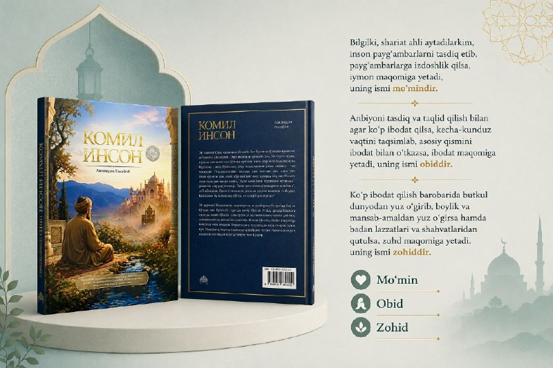
Bilgilki, shariat ahli aytadilarkim, inson payg‘ambarlarni tasdiq etib…
Bilgilki, shariat ahli aytadilarkim, inson payg‘ambarlarni tasdiq etib, payg‘ambarlarga izdoshlik qilsa, iymon maqomiga yetadi, uning ismi mo‘mindir. Anbiyoni tasdiq va…
Ey darvesh! Hech qachon bilim va hikmat beruvchi ko‘p kitob o‘qib, olim va hakim…
Ey darvesh! Hech qachon bilim va hikmat beruvchi ko‘p kitob o‘qib, olim va hakim nomiga erishmoqqa ko‘p urinma, ko‘p toat-ibodat qilib, o‘zingcha obid va shayx bo‘lishga…
Tahlil
Ushbu hikoyatni o'qib, bir necha holatlarni anglash mumkin. Eng avvalda odamlar o‘zgarmaganini bilish mumkin. Ya’ni, hikoyatda bir qattiqqo‘l ustoz bor va buni muallif…
Hikoyat: Shayx Sa’diy aytur
Shayx Sa’diy aytur: ”Mag‘rib mulkinda bir kuttob faqihin ko‘rdim, tursh yuzli, achi so‘zli, chirkin xulqli, yomon tirlikli, ko‘ngullar ozor qilinchi, och ko‘zli kimarsa…
Tez natija bo‘lmaydi. Kimningdir rizqi keng bo‘lib, yoshligida boyib ketishi…
Tez natija bo‘lmaydi. Kimningdir rizqi keng bo‘lib, yoshligida boyib ketishi mumkin. Ammo bu umr bo‘yi mana shu shaklda pul oqib kelib turadi degani emas. Ko‘ngildan tez…

Bilgilkim, komil inson deb shariat, tariqat va haqiqatni to‘liq egallagan odamni…
Bilgilkim, komil inson deb shariat, tariqat va haqiqatni to‘liq egallagan odamni aytadilar. Agar bu iborani tushunmasang, boshqacha so‘z bilan aytay: bilgilki, komil…
Foydali ishlar insonni charchatmaydi. Insonni foydasiz va zararli ishlar…
Foydali ishlar insonni charchatmaydi. Insonni foydasiz va zararli ishlar toliqtiradi. Odambolasi hayotiga nazar solsa, o‘zini ko‘ngildagidek yashamayotgan holda topsa…
Kuyovbola dastlabki qirq kunda kelinning oldiga ertaroq kirgani yaxshi, kechqurun…
Kuyovbola dastlabki qirq kunda kelinning oldiga ertaroq kirgani yaxshi, kechqurun mutlaqo ko‘chaga chiqmagani maqbul. Lekin o‘zini tutishida hayo va tortinish aks etsa…

Xudo va banda o‘rtasidagi sir hech kimga kerak emas. Bu gapning ma’nosi shuki, Xudo…
Xudo va banda o‘rtasidagi sir hech kimga kerak emas. Bu gapning ma’nosi shuki, Xudo uchun qiladigan ishlarini banda birovlarga aytmasligi kerak. Bundan tashqari Xudoning…
Assalomu alaykum, hurmatli ustoz Akrom Malik! Bu maktubni ham duo ma’nosida, ham…
Assalomu alaykum, hurmatli ustoz Akrom Malik! Bu maktubni ham duo ma’nosida, ham boshqa opa-singillarimizga xolis bir maktub sifatida qabul qilishingizni so‘rar edim…
Kelin sabrli, tili shirin, yuzi ochiq, chaqqon, ozoda boʻlsa, olam guliston. Hech…
Kelin sabrli, tili shirin, yuzi ochiq, chaqqon, ozoda boʻlsa, olam guliston. Hech bir qaynona oʻgʻlimning oilasini buzaman demaydi, qaynonaning dakkisi — asal, tarbiyasi…

Mubtalolik – yomon balo. Biror zararli va qaytarilgan ishga berilib qolishning nomi…
Mubtalolik – yomon balo. Biror zararli va qaytarilgan ishga berilib qolishning nomi – mubtalolikdir. Qaysi ishdan Xudo va payg‘ambar qaytargan bo‘lsa, qaysi ishni oqil…
Nevaralar tug‘iladi, oila turli tadbir-marosimlar, motam-u bayramlar o‘tadi - o‘n…
Nevaralar tug‘iladi, oila turli tadbir-marosimlar, motam-u bayramlar o‘tadi - o‘n yil davomida qaynona-kelin sekinlik bilan qadrdonlashib boradi. Qaynona o‘zini darrov…
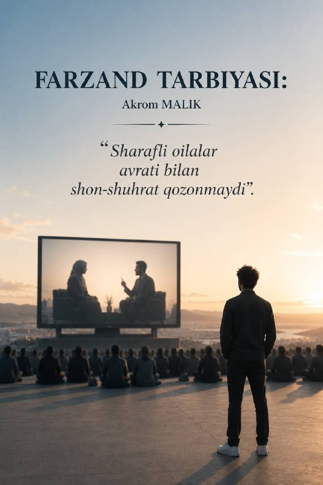
Farzand tarbiyasi inson hayotidagi eng asosiy masalalardan biri. Har bir xalqning…
Farzand tarbiyasi inson hayotidagi eng asosiy masalalardan biri. Har bir xalqning o‘ziga xos tafakkuri, zehniyati bor. O‘zbek xalqi uchun hayo, odob, kattalarga hurmat…
Sevgining ikkinchi bosqichi – oshiq ishqning bir kelib, bir ketgani haqida…
Sevgining ikkinchi bosqichi – oshiq ishqning bir kelib, bir ketgani haqida tasavvurga ega bo‘lgach, uning hujumini oldindan sezish qobiliyatini qo‘lga kiritadi. Yana…
Nega ba’zan avval kuchli sevgi, keyin nafrat paydo bo‘ladi? Sevgi – bir tomonning…
Nega ba’zan avval kuchli sevgi, keyin nafrat paydo bo‘ladi? Sevgi – bir tomonning ikkinchi tarafga talpinishi. Bu hirs yoki shahvat qasdidagi talpinish emas, balki…
Chetda, masalan, Shvetsiyada yashayotgan odamlarning Oʻzbekiston xalqiga farzand…
Chetda, masalan, Shvetsiyada yashayotgan odamlarning Oʻzbekiston xalqiga farzand tarbiyasidan aql oʻrgatishi mantiqqa zid. Chunki Gʻarbda yashayotganlar yurtdagi…

Uzoqni ko‘ra bilish uchun tartibli va tiniq fikrlash talab etiladi. Shunchaki, bir…
Uzoqni ko‘ra bilish uchun tartibli va tiniq fikrlash talab etiladi. Shunchaki, bir savol berish lozim: “Bu ishimning oxiri qanday bo‘ladi?” Bu savolning javobini bilish…
Kelin, agar sharoit ko‘tarsa, o‘zi nevara ko‘rgunicha ham qaynona huzurida bo‘lsa…
Kelin, agar sharoit ko‘tarsa, o‘zi nevara ko‘rgunicha ham qaynona huzurida bo‘lsa, maqsadga erishilgan bo‘lur edi. Bu shaklning bunday a’lo jihatlari bor: 1. Qaynona…
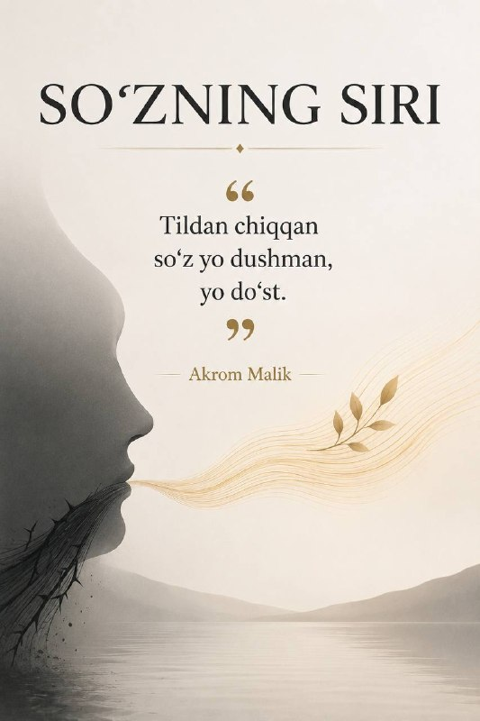
Inson hayotida so‘z o‘ta ahamiyatlidir. Yutgan odamlarning har biri so‘ziga…
Inson hayotida so‘z o‘ta ahamiyatlidir. Yutgan odamlarning har biri so‘ziga e’tiborli bo‘lganlardir. Yutqazganlarning hammasi so‘ziga loqayd qaraganlardir. Kim o‘z…
Xotinlar biror ishni barqaror bajara olmaydigan, xayollari har narsaga sochiluvchi…
Xotinlar biror ishni barqaror bajara olmaydigan, xayollari har narsaga sochiluvchi, diqqatini jamlashdan ojiz, begonalar ta’siriga tushuvchidirlar; agar qaysi xotin erga…
Xotin boshidagi erni his etishi, hech qachon mustaqil qaror berishi mumkin…
Xotin boshidagi erni his etishi, hech qachon mustaqil qaror berishi mumkin emasligini bilishi va shunga ko‘ra yashashi lozim. Xotin ko‘ngli tusagan narsani tezda qo‘lga…
Qadriyatlarga sodiq holda yashash oson emas. Inson o‘ziga biror qoidani qadriyat…
Qadriyatlarga sodiq holda yashash oson emas. Inson o‘ziga biror qoidani qadriyat deb tanlab olsa, bu qadriyatdan uni ajratish uchun hujumlar boshlanadi. Bu o‘ta oddiy…
Ularning g‘iybatlarini qilish hamma odamlarga yoqadi – bir guruh erni, bir guruh…
Ularning g‘iybatlarini qilish hamma odamlarga yoqadi – bir guruh erni, bir guruh xotinni yomonotliq qiladi. Aslida, ikki guruh ham ayni shu onda shaytonning lashkaridir…

Ushbu matn tamagirlikni o‘ziga kasb qilgan kaslar haqida emas, iffatli va sharafli…
Ushbu matn tamagirlikni o‘ziga kasb qilgan kaslar haqida emas, iffatli va sharafli, insofli va diyonatli odamlarning muhtojlik domiga tushib qolishlari haqidadir…

Siyosat haqida har bir odamda aniq va muxtasar ilm bo‘lsa, yaxshi bo‘ladi. Siyosat…
Siyosat haqida har bir odamda aniq va muxtasar ilm bo‘lsa, yaxshi bo‘ladi. Siyosat ilmidan xabardorlik insonni dunyo hayotidagi ko‘p balolardan saqlanishiga sabab…
Beshinchidan, to‘yda kichiklar xizmat qiladi, kattalar to‘yni boshqaradi, to‘y…
Beshinchidan, to‘yda kichiklar xizmat qiladi, kattalar to‘yni boshqaradi, to‘y egasiga yordam bo‘lsin deya hadyalar beriladi, aynan to‘yda bo‘lgani uchun bu to‘yona…
Iso paygʻambarga bir kimarsa kelib aytti: “Yo Ruhulloh, tilarman ul duoni menga…
Iso paygʻambarga bir kimarsa kelib aytti: “Yo Ruhulloh, tilarman ul duoni menga oʻgratgaysankim, oʻqisa oʻli tiri boʻlur”. Iso alayhissalom aytti: “Borgil, bu savdoni…
Ushbu faylda gazetaning oʻqiyotganingiz maqola chop etilgan kirillcha nusxasi…
👆Ushbu faylda gazetaning oʻqiyotganingiz maqola chop etilgan kirillcha nusxasi mavjud. Oxiri 👉 Boshlanishi Yaqinda dissertasiya himoya qilib, filologiya fanlari bo‘yicha…
Ushbu faylda gazetaning oʻqiyotganingiz maqola chop etilgan lotin harflaridagi…
👆Ushbu faylda gazetaning oʻqiyotganingiz maqola chop etilgan lotin harflaridagi nusxasi mavjud. 👉 Boshlanishi 2017-yil 13-yanvar kuni sud bo‘ldi, sudya menga…
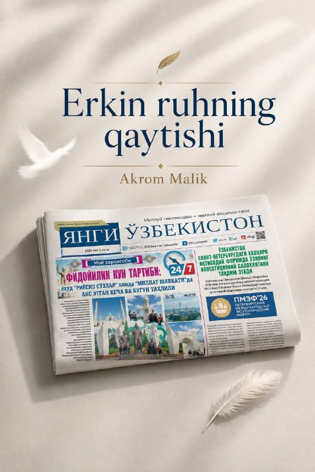
Akrom Malikning "Erkin ruhning qaytishi" nomli maqolasi "Yangi O'zbekiston"…
Akrom Malikning "Erkin ruhning qaytishi" nomli maqolasi "Yangi O'zbekiston" gazetasining 4-iyun 2026-yil payshanba kungi sonida e'lon qilindi. Maqolani to'liq…

Hayotiy tajriba va ilm boyligiga qarab mumtoz matnlar turli yoshlarda turli…
Hayotiy tajriba va ilm boyligiga qarab mumtoz matnlar turli yoshlarda turli qirralarini ko‘rsatadi. Kafkaning “Jarayon”ini tugatdim. So‘zboshida asar uslubi mijg‘ov…
Hech qachon qandaydir jamoalar tuzishga urinmagan yaxshi. Har qanday jamoaning…
Hech qachon qandaydir jamoalar tuzishga urinmagan yaxshi. Har qanday jamoaning ichida xoinlik yashaydi. Odam jamoasiga ishonsa, xor va zalil bo'ladi. Jamoa degani faqat…
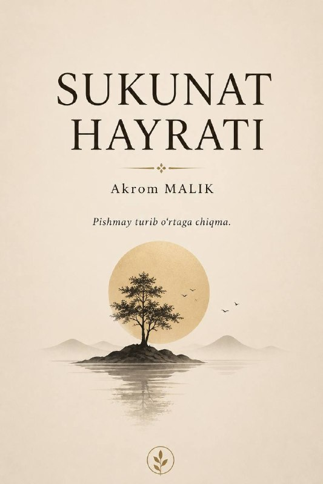
Taniqli bo‘laman degan o‘y qalbdagi kasallikdandir. Taniqli bo‘lmoq, shon-shuhrat…
Taniqli bo‘laman degan o‘y qalbdagi kasallikdandir. Taniqli bo‘lmoq, shon-shuhrat – bir kishini ko‘pchilik bilishidir. Albatta, yaxshi sifatlar bilan bilsa, yana ham…

Insonlar bilan munosabatlarni uzmaslik ma’qul. Odamlar bilan uzoq vaqt aloqalarni…
Insonlar bilan munosabatlarni uzmaslik ma’qul. Odamlar bilan uzoq vaqt aloqalarni saqlab qolgan yaxshi yoki uzoq vaqt salom-alik qiladiganingiz kishilar bilan muomala…

Hayotimizdagi ishlar ikki qismdan iboratdir: bizning ixtiyorimizdagi ishlar…
Hayotimizdagi ishlar ikki qismdan iboratdir: bizning ixtiyorimizdagi ishlar, bizning ixtiyorimizdan tashqaridagi ishlar. Aqiyda ilmida inson ixtiyorini kulliy…
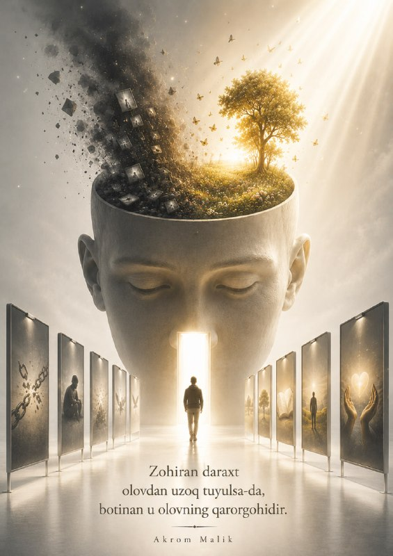
Insonlarning aksari o‘zlari xohlagan narsalarga ishonadilar. O‘zlari haq deb bilgan…
Insonlarning aksari o‘zlari xohlagan narsalarga ishonadilar. O‘zlari haq deb bilgan narsa uchun dalil izlaydilar. Qalbida mavjud shubhani haqiqat deb tasdiqlaydigan…
Tun choʻkdi. Tun koʻp sirlarga toʻla. Tun ham rahmat, ham qahr timsoli.
Tun choʻkdi. Tun koʻp sirlarga toʻla. Tun ham rahmat, ham qahr timsoli. Robbimiz! Tunimizni xayrli et! Tun gunohlarimizning emas, savoblarimizning pardasi boʻlsin…

Haqiqat hamma narsadan baland turadi.
Haqiqat hamma narsadan baland turadi. Yaqinda maktabda o‘quvchi o‘qituvchiga qo‘l ko‘tardi va bu juda katta shov-shuv bo‘ldi. Shunda qanday qilib o‘quvchilar bu darajaga…
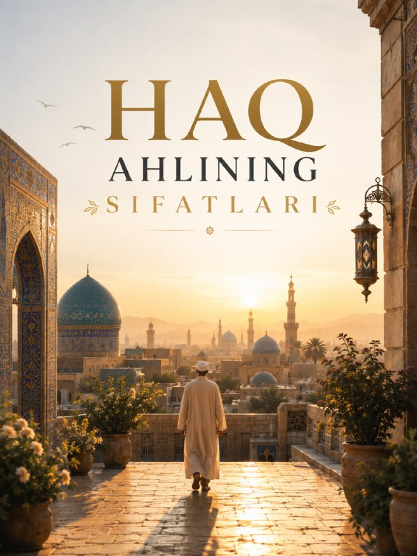
Ahli dunyo – dunyo ahlining ziddi ahli Haqdir. Ya’ni Haq ahli. Ular dunyo bilan…
Ahli dunyo – dunyo ahlining ziddi ahli Haqdir. Ya’ni Haq ahli. Ular dunyo bilan ishi bo‘lmagan, faqat Haq tomonda bo‘lgan, o‘yi, fikri, zikri Haqning so‘zlari bilan…
Qalbingga nazar sol: u doʻst xohlayaptimi? Kimdir boʻlsa-yu, u bilan gʻam-qaygʻuyim…
Qalbingga nazar sol: u doʻst xohlayaptimi? Kimdir boʻlsa-yu, u bilan gʻam-qaygʻuyim arisa? U menga, men unga beminnat suyanch boʻlsam deyaptimi? Sirlarimni yashiradigan…
Dunyo ahli — dunyoni hamma narsadan afzal qo'yuvchilardir. "Qisasi Rabg'ubuziy"da…
Dunyo ahli — dunyoni hamma narsadan afzal qo'yuvchilardir. "Qisasi Rabg'ubuziy"da aytilishicha, hali Odam alayhissalom yerga tushirilmay turib, Alloh insonlarning…
Sir eng buyuk kuch, eng mustahkam qudrat. Erkak sirini bersa, tuxumdan chiqqan…
Sir eng buyuk kuch, eng mustahkam qudrat. Erkak sirini bersa, tuxumdan chiqqan joʻjadek himoyasiz va zaif holga tushadi. Barcha halokat va magʻlubiyatlar sirni boy…
Aziz doʻstlar! Hurmatli oʻqirmanlar! Islom bilan hayoti nurli, iymon bilan aqli…
Aziz doʻstlar! Hurmatli oʻqirmanlar! Islom bilan hayoti nurli, iymon bilan aqli yorugʻ, taqvo bilan qalbi salim, xulqini goʻzal qilmoq yoʻlida jidd-u jahd qilayotgan…
Musulmonlar uchun Qurbon hayiti – Qurbon bayrami eng ulugʻ bayramdir.
Musulmonlar uchun Qurbon hayiti – Qurbon bayrami eng ulugʻ bayramdir. Bu bayramni quvonch va shodlik ila nishonlamoq kerak. Buning uchun ulugʻlar kichiklarga, boylar…
Unutish — ulkan ne'mat. Agar unuta olmasa, ayrim xotiralar insonni halok qiladi.
Unutish — ulkan ne'mat. Agar unuta olmasa, ayrim xotiralar insonni halok qiladi. Sirkani qorong'u yerga qo'yib, qancha uzoq yil saqlasang, shu qadar kuchli bo‘larkan…
Iblisning sifatlaridan biri tushkunligidir. Ya’ni iblis bu tushkun va mahzundir. U…
Iblisning sifatlaridan biri tushkunligidir. Ya’ni iblis bu tushkun va mahzundir. U Xudodan umid kesgan va jahannamga rozi boʻlgan maxluq sanaladi. Menga baribir degan…
Oʻz xulqi haqida qaygʻuradigan, oʻz adab va insofini tahlil etadigan hamda goʻzal…
Oʻz xulqi haqida qaygʻuradigan, oʻz adab va insofini tahlil etadigan hamda goʻzal axloq sari intiladigan odamning har biri pokiza zotga mansubdir. Chunki inson zotidagi…
Bu olamning ishi qiziq.
Bu olamning ishi qiziq. Aytiladiki, nifoqning sanalgan alomatlari toʻrttaga yetadi: 1. Gapirsa, yolgʻon gapirish. 2. Va’da bersa, bajarmaslik. 3. Omonatga xiyonat…
Insondagi ayrim kasalliklarning yashirin davri bo'lar ekan — xastalik jism ichida…
Insondagi ayrim kasalliklarning yashirin davri bo'lar ekan — xastalik jism ichida berkinib o'tirib, keyin fursat topganda o'zini namoyon etar emish. Shunga o'xshash…
Dunyoga boʻlgan muhabbat qalblarni egallab olganiga dalillar:
1. Dam olish bahonasida qalbning turli sayohatlarni yaxshi koʻrishi, chet davlatlar, togʻlar, dengizlar sari talpinishi hamda bu haqida imkon boricha hammaga bildirish…
Hayotning lazzatlaridan bahramand boʻlmogʻim kerak deya imkon qadar harakat…
Hayotning lazzatlaridan bahramand boʻlmogʻim kerak deya imkon qadar harakat qilayotgan yoshlar yanglishadilar. Hayotning lazzatlari boʻlmish hoy-u havas; oʻyin-kulgu…
Yozuvchilik bu noyob iste’doddir. Juda koʻpchilik qalam tutishi mumkin, lekin…
Yozuvchilik bu noyob iste’doddir. Juda koʻpchilik qalam tutishi mumkin, lekin chinakam iste’dod va qabuliyat juda kam insonlarda boʻladi. Yozuvchi uchun eng avvalo…
Insonlarning aybini ochishga oʻchlik – insonning tuban sifatidir.
Insonlarning aybini ochishga oʻchlik – insonning tuban sifatidir. Aybjoʻ – odamlar aybini koʻrguvchi. Aybgoʻ – odamlar aybini aytishni kasb qilgan kishi. Gʻaflat…
Kimdir xabar keltirsa, darhol ishonib ketish yaramaydi. Ko'ngilga kelgan har bir…
Kimdir xabar keltirsa, darhol ishonib ketish yaramaydi. Ko'ngilga kelgan har bir gumonni ham tez tilga chiqarish ma'qul ish emas. Ahamiyatsiz gaplarni gapirgan odamning…
Yoshlarni toza va pokiza boʻladi deb bilardim. Keyin ma’lum boʻldiki, yoshlar…
Yoshlarni toza va pokiza boʻladi deb bilardim. Keyin ma’lum boʻldiki, yoshlar orasida ham ayyor, ikkiyuzlamachilari koʻp ekan. Senga yaxshi muomala qilib, ota-onasiga…
Inson oʻz istaklari darhol bajo boʻlishi uchun harisdir: tezda boy boʻlay; tezda…
Inson oʻz istaklari darhol bajo boʻlishi uchun harisdir: tezda boy boʻlay; tezda olim boʻlay; tezda uy olay; tezda ulov olay; tezda uylanay; tezda erga tegay… Aslida…
Boshingga har qancha musibat tushsa ham, jim boʻl. Sukut qil. Gapirma. Imkon qadar…
Boshingga har qancha musibat tushsa ham, jim boʻl. Sukut qil. Gapirma. Imkon qadar e’tibor berma. Oʻzingni oqimga tashla. Malomatlarga javob aytma. Senga kelgan sinov…
Mirzo Ulugʻbek tumanidagi Buyuk Ipak yoʻli metrosidan chiqqanda
Dogʻiston koʻchasidan Parkent koʻchasiga chiqaverishda Evos oshxonasida oldidagi soyabonlar tagida bir guruh maktab oʻquvchilari karta oʻynab oʻtirishibdi. 10-15ta…
Oylik berishning hikmati haqida ayrim haqiqatlardan so‘ylasak, foydali bo‘lsa, ajab…
Oylik berishning hikmati haqida ayrim haqiqatlardan so‘ylasak, foydali bo‘lsa, ajab emas, inshaaAlloh. Rahbar, u qanday joyda bo‘lmasin, xodimlarning kayfiyati va…
Hammamiz hissiy beqarorlikka chalindik. Aksar odamlarning ichi sababsiz vahima…
Hammamiz hissiy beqarorlikka chalindik. Aksar odamlarning ichi sababsiz vahima hamda vasvasa bilan toʻlgan. Aslida, sababsiz emas. Odamiyzod oʻzining qay darajada…
Ulkan-ulkan yutuqlarni jimgina hazm qilib yuborish va ko‘z-ko‘z qilmaslik hamda…
Ulkan-ulkan yutuqlarni jimgina hazm qilib yuborish va ko‘z-ko‘z qilmaslik hamda yutuqni xalqqa xizmat qilish deb hisoblash o‘tgan ulug‘lar, salaflar, solik va…
Bir gadoy bir boyning ostonasiga yotib oldi. Ya'ni har kuni sadaqa so'rar edi,uning…
Bir gadoy bir boyning ostonasiga yotib oldi. Ya'ni har kuni sadaqa so'rar edi,uning boshqalardan farqi shulki, u aniq miqdor talab qilmoqda edi: menga ming dinor ber der…
Iblisda ilm, irfon va ibodat bor edi. Lekin ishq yo‘q edi.
Iblisda ilm, irfon va ibodat bor edi. Lekin ishq yo‘q edi. Inson ham ilm-u, irfon-u, ibodatni kasb etasa-yu, ishqni kasb etmasa, unda shaytonning mazhabini tutib qolishi…
HAYOT JUDA HAM ODDIY VA GO'ZAL, uni murakkab va qabih qiladigan insonning nafsidir.
HAYOT JUDA HAM ODDIY VA GO'ZAL, uni murakkab va qabih qiladigan insonning nafsidir. Qayg'uga tushishga sira ham hojat yo'q, shunchaki, odam bolasi pok bo'lsin…
Saxtko‘sh elga dema, oxir falakdur saxtgir,
Saxtko‘sh elga dema, oxir falakdur saxtgir, Arzimas olamda hech ish xud bo‘lurg‘a saxtko‘sh. Mazmuni: Dunyo deb tirishgan odamlarga falakning oxirgi ishi zolimlik dema…
Ochko'zlik va shuhratparastlik kasalidan omonda bo'lish eng katta baxt, chunki bu…
Ochko'zlik va shuhratparastlik kasalidan omonda bo'lish eng katta baxt, chunki bu ammora nafsning ajralmas sifatlaridandir. Hozir "ilg'or" yoshlarimiz orasida "O'sish"…
Ahli din paymonshikandur, qilsa bo‘lmas do‘stluq,
Ahli din paymonshikandur, qilsa bo‘lmas do‘stluq, Bas, manga mug‘ dayrida ulkim, tutar paymona, do‘st. Mazmuni: Din ahli va'dasini buzuvchidir, ular bilan do'stlik qilib…
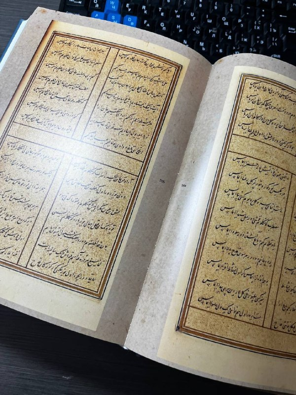
Ajdodlarimizning merosi bizga nima uchun muhim?
Ajdodlarimizning merosi bizga nima uchun muhim? O'zligimiz, ruhimiz, qalbimiz va nihoyat, istiqlolimiz, ya'ni bu shaxsiy erkimiz, davlat mustaqilligi va millat…
Ushbu matnda eskilarning, yana ham aytsak, ma’rifatli oilalarning tarbiya uslublari…
Ushbu matnda eskilarning, yana ham aytsak, ma’rifatli oilalarning tarbiya uslublari haqida aytib bermoqchiman. Agar farzandlaringiz tiniq fikrli, fahm-u farosatli…
«Annosu’ ’alo dini muluk» hadisining tafsiri
Shahning af’oli etar xaylu sipohig‘a asar, Chu nabi dediki, «annosu ’alo dini muluk». Hukamo ham dedilar shahni tengiz, xayli ariq, Ul achig‘dur, bu achig‘, ul chuchuk…
Oila rahbari er deya uning vazifalariga ko‘p urg‘u berilishi adolatdan. Lekin erni…
Oila rahbari er deya uning vazifalariga ko‘p urg‘u berilishi adolatdan. Lekin erni asrab-avaylash xotinning bosh vazifasidir. Er oilani ta’minlashi uchun sokin va…
Ota-onalar va farzandlar oʻrtasida muayyan farqlar paydo boʻlgan davrda…
Ota-onalar va farzandlar oʻrtasida muayyan farqlar paydo boʻlgan davrda yashayapmiz. Sobiq shoʻro davrida asl manbalardan mahrum etilgani uchun din-u diyonatdan uzoq…
Ilm ahli soxta boʻlmaydi, Xudoning ilmi munosib boʻlmaganlarga berilmaydi.
Ilm ahli soxta boʻlmaydi, Xudoning ilmi munosib boʻlmaganlarga berilmaydi. Haqning kalomi va Paygʻambarning soʻziga muvofiq hikmatlar kirli va nopok qalbdan chiqmaydi…
Oila qurishdan maqsad nima?
Oila qurishdan maqsad nima? Hamma buni biladigandek, lekin yoshlarimiz uchun eslatma sifatida qayd etib qo'yishni lozim topdik. Oila insonning fitriy talablaridan…
Oʻgʻilni uylantirish, qizni uzatish – ota-onaning ishi.
Oʻgʻilni uylantirish, qizni uzatish – ota-onaning ishi. Buning ichiga balogʻatga yetgan oʻgʻilga qiz izlab topish ham kiradi. Ota-onalar oʻgʻillari uchun bir umrlik…
Insonning ulg'ayishi bosqichma-bosqich kechadi. Avval u bitta xatosini anglaydi…
Insonning ulg'ayishi bosqichma-bosqich kechadi. Avval u bitta xatosini anglaydi, qiynalib tuzatadi; keyin ikkinchi nuqsonini kashf qilib, uni yo'qotish uchun intiladi…
Xodimlarning juz’iy kamchiliklari odatiydir. Ya’ni ishga kechikishi, topshiriqlarni…
Xodimlarning juz’iy kamchiliklari odatiydir. Ya’ni ishga kechikishi, topshiriqlarni oʻz vaqtida bajarmasligi, unutuvchanligi. Darhol ularni qattiq koyishga, jiddiy…
Begonalar hikoyasidan anglaganlarim
Mardum Mulla G'ani pir obrazida qaysidir bir maqomga yetgan, orif bir kishi. U o'zidagi fayzni sezgan irfon sohiblaridan. Uning qalbi shu darajada keng va rahm shavqatga…
Ҳикоя қилинишича, бир қўшин бир шаҳарни босиб олиш учун унинг атрофига жойлашди-да…
Ҳикоя қилинишича, бир қўшин бир шаҳарни босиб олиш учун унинг атрофига жойлашди-да, шаҳар ҳақида маълумот йиғиб келишга жосусларини юборди. Жосуслар бир ёш йигитча билан…
Begonalar
Ikki oʻgʻrining tavbasi juda gʻalati kechdi: bolaligidan choʻntak kesib, el molini oʻmarib katta boʻlgan bu mardum Mulla Gʻani pirning oyogʻiga oʻzini tashladi: dod…
Inonch
(Tarixga bitilgan haqiqat) Hoqon sizni chaqiryapti deyishgach, Botir Boshchi hammasini tushundi: hukmdor saltanatini kengaytirishga qaror beribdi. Chunki olti oy avval…
Aziz doʻstlar!
Aziz doʻstlar! Sizlarni jurnal (oynoma) va gazeta (roʻznoma)larga obuna boʻlib, oʻqib borishni tavsiya qilaman. Tavsiya qiladiganimiz oynomalar: 1. Hidoyat. 2…
Aziz do'stlar!
Aziz do'stlar! Ramazonning bayrami - iydul fitr muborak bo'lsin! Ro'za tutishda xatolarga yo'l qo'ydik, g'iybatlar qildik, Ramazon adabiga mos bo'lmagan ishlar bilan…
Kuchi yetmaydigan ishlarga uringan banda oqibatda oʻzi shikastlanadi.
Kuchi yetmaydigan ishlarga uringan banda oqibatda oʻzi shikastlanadi. Vaqt oʻz oqimida. Voqealar oʻz oʻzanida. Bandaning sapchishi uning uchun hech narsani…
Nimadir bizga yetmayotgandek.
Nimadir bizga yetmayotgandek. Nimadir bizdan qochyapti va uni tutib olish uchun shoshyapmiz. Aslida, hammasi joyida, hammasi muvozanatda – niyatimizga loyiq…
Аvval nafsga ergashamiz – amallarimiz yomonlashadi. Taqiqlangan ishlarni qilamiz…
Аvval nafsga ergashamiz – amallarimiz yomonlashadi. Taqiqlangan ishlarni qilamiz. Buning oqibatida qalbda xastalik paydo boʼladi. Аql nafsni razolatdan toʼsa olmagach…
Книга Акрома Малика «Петля» (Halqa)
Когда учитель подарил мне книгу Акрома Малика «Петля», я не сразу осознал, насколько масштабное и сложное произведение оказалось у меня в руках. Прочитав его, я понял…
3-qism
Bu murid boshqa safdoshlarini yigʻib, Qustantaniya bordi. Soʻng hammalari bir boʻlib, jamoat boʻlib, Xudoga yolvora boshladilar: zikr-u tilovatlar, istigʻfor-u…
2-qism
… Shayx San’on kalisoda nasroniy rohiblar ichida dindan chiqdi, Islom mamlakatlarida kofirlik belgisi boʻlgan zunnor arqonini beliga bogʻladi; may ichdi va Mus’hafni…
1-qism
Ishq haqida eshitgan inson olov haqida eshitib, uning yorugʻidan bahra olib, lekin kuymagan bir parvona kabidir. Olovda kuygach, uning sogʻ vujudi qolmaydi. Kuyadi va…
Iymon egasiga ilhom Xudodan keladi. Hayot haqida, insonlar haqida, goʻzallik va…
Iymon egasiga ilhom Xudodan keladi. Hayot haqida, insonlar haqida, goʻzallik va umuman hamma narsa haqida qalbda paydo boʻladigan fikrlar Xudodan nur kabi qalbga ato…
Yiqilganingda tur deydigan odaming bormi?
Yiqilganingda tur deydigan odaming bormi? Qaygʻu seni egallab olganida hammasi yaxshi boʻladi deydigan-chi? Seni zulmatlardan chiqarish uchun chin dildan kurashadigan…
Ulug'larning shunday o'giti bor: "Komil xulqlarni o'n qismga boʻlsak, toʻqqiz qismi…
Ulug'larning shunday o'giti bor: "Komil xulqlarni o'n qismga boʻlsak, toʻqqiz qismi tagʻofuldan iborat”. Tagʻoful – bilib-bilmaslikka olmoqdir. Ya’ni atrofdagi…
Ey qalbi gul kabi nazokatli Ayol!
Ey qalbi gul kabi nazokatli Ayol! Ey aqli tuyg'ular bo'ronida chirpirak bo'lguvchi Ojiza! Ey qarorlari doim o'zgarib, ikkilanishlar ichida qolguvchi Zaifa! Seni…
Eng to‘g‘risini topish – mashaqqat. Ishonaver, shunday.
Eng to‘g‘risini topish – mashaqqat. Ishonaver, shunday. Qalbi uyg‘oq va idroki teran inson hech qachon yolg‘onlarga ko‘nmaydi. U hamisha haqiqatni istaydi. Adashib…
Ketsang, rozilik olib ket. Kimdan qarzdor bo‘lsang, albatta, uni rozi qil…
Ketsang, rozilik olib ket. Kimdan qarzdor bo‘lsang, albatta, uni rozi qil. Qarzdorlik deganda ma’naviy qarzni ko‘proq nazarda tutilmoqda. Senga ilm bergan, hunar…
Maktabning vazifasi faqat ta’lim bilan cheklanishi biryoqlama natijaga olib keladi…
Maktabning vazifasi faqat ta’lim bilan cheklanishi biryoqlama natijaga olib keladi. Tarbiyani uygʻunlashtirish degan gap ham mujmaldir. Ta’lim va tarbiyaning maqsadi…
Xorijda o'qish oliy maqsad sifatida ko'rilmasligi kerak. Maqsad o'qish emas, ilm…
Xorijda o'qish oliy maqsad sifatida ko'rilmasligi kerak. Maqsad o'qish emas, ilm olish. Ilm olish emas, qanday ilmni olish - eng muhimi. Qandaydir boy davlat meni…
Azizlarim, yaxshimisizlar?
Azizlarim, yaxshimisizlar? Xudoyim barchamizni O'z tavfiqi ila ne'matlantirsin! Do'stlarimizdan biri "Buxoro sahifalari" degan ajoyib loyiha qilishgan edi. Ya'ni…
Insonlarni oʻz yoʻrigʻingizga yurgizishga urinmang, hatto u sevganingiz boʻlsa ham!
Insonlarni oʻz yoʻrigʻingizga yurgizishga urinmang, hatto u sevganingiz boʻlsa ham! Paygʻambarim sollalohu alayhi va sallam oʻzining sevimli amakisi Abu Tolibni hidoyat…
Internetda ota oʻgʻli bilan doʻst boʻlsin degan fikr eshitdim. Qat’iyan xato fikr.
Internetda ota oʻgʻli bilan doʻst boʻlsin degan fikr eshitdim. Qat’iyan xato fikr. 1. Otadan koʻra yaqin doʻst inson uchun yoʻq. Uni izhor qilishga va bildirishga ota…
Yaxshi loyihani hammamiz qoʻllasak, juda goʻzal boʻlur edi.
Yaxshi loyihani hammamiz qoʻllasak, juda goʻzal boʻlur edi. Anvar Shernazarov doʻstimiz bookblog loyihasini qilmoqda. Kitobxonlarning ijtimoiy tarmogʻi. Yaxshi niyat…
Qalam – Xudo bergan ne’mat. Qalam der ekanmiz, badiiy, ilmiy ijod, nutq, va’zlarni…
Qalam – Xudo bergan ne’mat. Qalam der ekanmiz, badiiy, ilmiy ijod, nutq, va’zlarni eslaymiz. Romanlar, qissalar, hikoyalar; she’rlar, qasidalar, dostonlar va hokazo…
Yozuvchi, shoir va navoiyshunos Akrom Malikning ijtimoiy tarmoqlarda umumiy…
Yozuvchi, shoir va navoiyshunos Akrom Malikning ijtimoiy tarmoqlarda umumiy "Ma'rifat safari" nomi ostidagi sahifalari professional bosqichda tashkillashtirilmoqda…
Ифк (туҳмат) ҳодисаси пайтида ансорлардан бир аёл Оиша розияллоҳу анҳонинг…
Ифк (туҳмат) ҳодисаси пайтида ансорлардан бир аёл Оиша розияллоҳу анҳонинг олдиларига кирди. У ҳеч бир сўз айтмади, фақатгина Оиша онамиз билан узоқ йиғлади. Онамиз…
Bugun ajoyib tadbirga bordim.
Bugun ajoyib tadbirga bordim. “Super kitobxon” kitobni tez oʻqishga oʻrgatadigan oʻquv kursi. Uning asoslarini va isbotlarini tushuntirib berishdi. Haqiqatan, kitobni…
Doʻstlarimiz yaxshi bilishadi – 2026-yil, 21-yanvar, chorshanba, soat 10:00…
Doʻstlarimiz yaxshi bilishadi – 2026-yil, 21-yanvar, chorshanba, soat 10:00 – 12:40lar oraligʻida Alisher Navoiy nomidagi Toshkent davlat Oʻzbek tili va adabiyoti…
“Turkiy alifbo tahsili” kursiga ariza topshirganlar soni 200 nafardan oshdi. Shu…
“Turkiy alifbo tahsili” kursiga ariza topshirganlar soni 200 nafardan oshdi. Shu munosabat bilan qabul suhbatlari boshlanmoqda. Orangiz orasida talabalar hamda ilmiy ish…
Ҳикоя қилишларича, бир гуруҳ араблар овга чиқишди, уларнинг йўлида урғочи…
Ҳикоя қилишларича, бир гуруҳ араблар овга чиқишди, уларнинг йўлида урғочи сиртлон(гиена) учраб қолди(араблар уни "Умми Омир" деб аташарди). Унинг изига тушишди. Сиртлон…
Илмнинг ихлосмандлари!
Илмнинг ихлосмандлари! Камина ходимингиз акром малик кўплаб китобхонлардан, илм мухлисларида мактублар оламан. Улар билан телеграм-мактубот орқали суҳбатлашаман, баъзан…
Азиз дўстлар!
Азиз дўстлар! Яхшимисиз? Кайфиятингиз яхшими? Қишнинг сукутли оқшомида "Мен севган шеър" танлови ғолибларини эълон қилишни Аллоҳ насиб этиб турибди. Бу танлов "Акром…
Dasturchiman
Inson aqlini tanigach, o'ziga: "Men nimaga yashayabman?", "Men nima uchun yaratildim?" kabi savollar berib, javob izlashni boshlaydi. Eski O'zbek yozuvini o'rganishni…
Kasbim – savdo menejeri.
Kasbim – savdo menejeri. Savdoga bu yozuvni ne keragi bor deyishga shoshmang, bu to'g'risida endi gaplashamiz. Eski turkiy yozuvni o'rganishni boshlaganimizga ikki oydan…
Millatning aql quvvati
Aql quvvati ilm bilan oʻlchanadi. Oʻqish. Izlanish. Dalillarni kuzatish. Yigʻish. Solishtirish. Saralash. Mantiqiy xulosalar chiqarish. Mana shu aqlning quvvatidan…
AyTi yoʻnalishida talabaman.
AyTi yoʻnalishida talabaman. Ikki oydan oshiqroq vaqtdan buyon turkiy tilni ustoz Akrom Malik boshchiliklarida oʻrganib kelyapman. Tarix, til va adabiyotlarga qiziqqanim…
Фанорчи ота
(ҳикоя) Тор, қийшиқ кўчанинг ўксик оқшомини Турсунқул аканинг чурук дарвозаси тепасига ўтқизилган бир фанорнинг титрак нурларигина ёритар эди. Уни ҳар кун кечқурун паст…
Иссиқнинг зидди совуқ, оқнинг терси қора, яхшининг қаршисида ёмон ва ҳоказо. Олам…
Иссиқнинг зидди совуқ, оқнинг терси қора, яхшининг қаршисида ёмон ва ҳоказо. Олам ишлари мусбат ва манфий устида. Халойиқ ҳам икки қисм: хос ва авом. Авом фикрламайди…
Йўналишимиз савдо-сотиқ, сотувчилик билан шуғилланамиз. Илмга муҳаббат ва қизиқиш…
Йўналишимиз савдо-сотиқ, сотувчилик билан шуғилланамиз. Илмга муҳаббат ва қизиқиш бўлгани учун, қодир қилганича китоб мутолаа қиламиз. Эски туркий тилни ўрганишимиз…
Kamina talabaman, inshaAlloh, kelgusida millat farzandlariga muallimlik qilish…
Kamina talabaman, inshaAlloh, kelgusida millat farzandlariga muallimlik qilish niyatidaman. Eski turkiy yozuvni o‘rganishga bo‘lgan ilk ishtiyoqim ikkinchi kursda o‘qib…
O‘quvchiman. Ilm olishni hayotimning muhim bir qismi deb bilaman va bo‘sh…
O‘quvchiman. Ilm olishni hayotimning muhim bir qismi deb bilaman va bo‘sh vaqtlarimni foydali mashg‘ulotlar bilan to‘ldirishga harakat qilaman. Eski turkiy tili va…
УЗОҚ УМР КЎРИШНИ ИСТАЙМАН, биласанми, нега?
УЗОҚ УМР КЎРИШНИ ИСТАЙМАН, биласанми, нега? Роббим берган тақдирни розилик ила яшаб ўтиш учун. Роббимга тавбалар қилиб қолиш учун. Худойимга кўпдан кўп ибодатлар қилиш…
ТУПРОҚ БЎЛИШ, ПИСАНД ЭТИЛМАСЛИК ВА ХОРЛАНИШ ҲУЗУРИ иззат ва кўкларга кўтарилишдан…
ТУПРОҚ БЎЛИШ, ПИСАНД ЭТИЛМАСЛИК ВА ХОРЛАНИШ ҲУЗУРИ иззат ва кўкларга кўтарилишдан кўра яхшироқ эканлигини билармидинг?! Одамлар сени мақтагани сайин ичинг кирга ва…
Топ-тоза туҳматга қолишнинг лаззатини биласанми?
Аввал шундай изтиробга соладики, тишларинг бир ҳафта тўхтамай оғриса ҳам бунга тенг кела олмайди. Кимдир кўтариб... йўқ, Юсуфни акалари қудуққа кўтариб отиб…
КЕЧИРИШ ВА ҚАЛБГА ХУДОДАН БОШҚА КИРИТМАСЛИК - азобларнинг тугаши, завқу шавқнинг…
КЕЧИРИШ ВА ҚАЛБГА ХУДОДАН БОШҚА КИРИТМАСЛИК - азобларнинг тугаши, завқу шавқнинг бошланишидир. Инсонлар севгисини талаб қилишда нафснинг ҳиссаси бор. Сени кимдир…
ХУДОНИ ТАНИШНИНГ ЯНА БИР БЕЛГИСИ шулки, сенга ёмонлик қилганларни кечирасан.
ХУДОНИ ТАНИШНИНГ ЯНА БИР БЕЛГИСИ шулки, сенга ёмонлик қилганларни кечирасан. Уларнинг ҳаққига дуо қиласан. Ич-ичингдан улар учун яхшилик соғинасан. Ҳеч бир инсоннинг…
Орифларнинг сифати
Илм маълумотларни хотирада сақлашдир. Ҳикмат фойда ва зиённи ажрата олишдир. Илмни жамлаган одам олим. Ҳикматни жамлаган одам ҳаким. Лекин илм ва ҳикматни ўз ўрни қўллай…
Валоят сирлари
Аллоҳга дўст бўлган соҳибкароматлар қандай бўладилар? Бу ҳақда бир ажиб ҳикоят бор, Сиз ҳам ўқиб кўринг-а: Довуди Тойй ҳазратлари дарё қирғоғида балиқ тутиб ўтирганди…
“Ҳалқа” китобининг таржимаи ҳоли ҳақида қисқача
Аллоҳнинг инояти, улуғларнинг дуоси ҳамда яхши инсонларнинг ёрдами билан “Ҳалқа” китоби нашрдан чиқди, алҳамдулиллаҳ. Бу ғариб китобнинг оғир бир таржимаи ҳоли бор. Бу…
Кейинги вақтларда айрим инсонлар билиб-билмай ўзбек халқини айблаб қолмоқдалар. Бу…
Кейинги вақтларда айрим инсонлар билиб-билмай ўзбек халқини айблаб қолмоқдалар. Бу нарса бизни хафа қилади. Қолаверса, хорижга чиқиб Ватанга тош отадиган каслар ҳам…
Китоб ва китобхонлик
Ҳар қандай китобни ўқиб кетавериш бу илм эмас. Китобни устозсиз ўқиш жаҳолатни кўпайтиради. Китоб ўқишнинг Туркистонда минг йилдан ортиқ тарихга эга маданияти бор. Китоб…
Фарзанд улғайтиришнинг ҳикмати
Фарзанд ота-она олдидаги қарзини уза олмайди. Ота-она ҳам фарзандни қарздор қилиб, кейин бу қарзни узиши учун боқмаслиги керак. Ота-она бўлишнинг бир қанча илоҳий…
Mazkur risola farzi ayn, olti iymon kalimasining sharhi, mazhab imomlari, usuli…
Mazkur risola farzi ayn, olti iymon kalimasining sharhi, mazhab imomlari, usuli dinning (aqiyda) bayoni, namoz bayoni va ilm fazilati, ro'za, haj, zakot, nikoh, taloq…

Risolayi marg'uba
Onamning bobolari mulla Olim rahmatullohi alayh naqshbandiya suluki murshidlaridan edi. Sobiq Sho'ro mustamlakasi davrida xalqni dinga, axloqqa irshod qildi. Haq yo'lda…
Oʻzini butun hayotini mukammallik kartinasi oʻlaroq,
Oʻzini butun hayotini mukammallik kartinasi oʻlaroq, xatolarini ham fazilat rangiga boʻyab, qadam-baqadam oʻzidan beozor va tirishqoqni yoqib odamlarga ulashib…
Oilabuzarmon yoki uybuzarmonlar haqida
Oila muqaddasdir. U pok saqlanishi kerak. Oilaning sirlari oilada qolishi shart. Er va xotin bir dumaloqning ikki pallasidir. Xiyonatsiz yashayotgan er-xotin orasini…
Mutolaa doimiy hamrohimiz bo'lishi kerak. Sohamdan kelib chiqib faqat hazrat…
Mutolaa doimiy hamrohimiz bo'lishi kerak. Sohamdan kelib chiqib faqat hazrat Alisher Navoiy asarlarini o'qiyman. Lekin bolalikda, o'smirlik va talabalik yillarimda…
Haqiqiy olim, chin professor ustozning yuksak madaniyat va mahorat bilan yozilgan…
Haqiqiy olim, chin professor ustozning yuksak madaniyat va mahorat bilan yozilgan maqolalarini oʻqib borishni istaysizmi? Ilm va hayot, tajriba va hikmat qorishgan…
Er avtokratiyasi
Uyda er cheksiz hokimiyat egasi bo'lgan podshoh kabi bo'lishi kerak. Ya'ni avtokrat. Avtokrat erkakning oilasida tartib va baxt hukmrondir. Chunki oqil erkak so'z…

Akram Malik juda katta mashaqqatlar va ulkan sabr bilan buyuk mutafakkir, adib va…
Akram Malik juda katta mashaqqatlar va ulkan sabr bilan buyuk mutafakkir, adib va olim Alisher Navoiyning "Hayratul abror" asari ustida ilmiy ish olib bordilar. Bir…
O‘z nazmining rutbasi poyasin ti’dod qilur va har biriga martabaye isnod qilur
Navoiy she’ri to‘qquz baytu, o‘n bir bayt, o‘n uch bayt Ki, lavh uzra qalam ziynat berur ul durri maknundin. Bukim albatta yetti baytdin o‘ksuk emas, ya’ni Tanazzul…
Jaholatning tomiri
Haqni qabul qilmaslik nafsga qullikdan boshlanadi. Haqni qabul qilishni istamagan inson haqiqatni rad etish uchun turli raddiyalar o'ylab topadi. Endi uni aslo yengib…
Baraka qayerga qochdi?
Pulda, vaqtda, ishda baraka yo'q. Har qancha mablag' bo'lsin, xarajatlarga yetmaydi. Qarz bo'lganlar ko'p. Ko'ngillardan halovat, ko'zlardan xotirjamlik g'oyib…
Qalbni kuzatib turish qiyin. U juda tez aylanadi. Holati dam-badam oʻzgaradi.
Qalbni kuzatib turish qiyin. U juda tez aylanadi. Holati dam-badam oʻzgaradi. Sevgidan lof urasan. Ammo sevgiling qon ichsa, sen qandoq sharbat ichasan?.. Yolgʻon…
Баъзи ҳолатларни кузатиб ё фаросат, ё муҳаббат танқислашмоқда деб ўйлайман.
Баъзи ҳолатларни кузатиб ё фаросат, ё муҳаббат танқислашмоқда деб ўйлайман. Қоида: Инсонлар, хусусан, мўминлар бир-бирларининг ҳолатларига бефарқ бўлмасликлари керак…
“Hayrat ul-abror” sharhi taqdimoti
DASTURI 09.30 – 09.50. Mehmonlarni kutib olish. 09.50 – 10.00. Hazrati Alisher Navoiyga ehtirom – millatga, qadriyatlarga ehtirom. Akademik Shuhrat Sirojiddinov. 10.00…
Адаб ва ҳиммат
Ақл ҳам ўсади. Ақлни адаб ўстиради. Инсон адабни одат тутгани сайин ақлли бўлиб боради. Адабсиз ақл ва эс-ҳушдан йироқ бўлади. Адаб ҳаммага лойиқ муомала қилишдир…
Ёлғондан тийилинг!
Ёлғон (алдамчилик)нинг уч кўриниши бор: 1. Ваъда берасан ва бажармайсан. Масалан, жийдазор бозоридан бирор нарса нархини билиб бераман дейсан, аммо бу ишни қилмайсан…
Она ўз қизининг бахтли бўлиши учун қандай ҳисса қўша олади?
Аёлнинг бахти фақат оиласи билан тугалдир. Оиласи бўлмаган аёл бахти кемтикдир. Ҳатто унинг қалби жуда ҳам синиқ бўлади. Оиланинг устуни эса эрдир. Эр бўлмаган хонадон…
Эрга итоат ва садоқат аёлга бахт келтиради
Оилада эр раҳбар бўлмаса, ўғиллар қизтабиат, қизлар эркакшода ўсади. Оила майда муаммоларга ўралашади. У оиладан етук шахсиятлар чиқмайди. Чунки кучли ва ҳурматланган эр…
Улуғларга хатоларини айтиш қанчалик тўғри?
Янги дея аталаётган замонда сўз эркинлиги аталган бир афюн жамиятларга ичирилди. У эркинликка кўра, ҳар ким оғзига келганини айтиш адабсизлигини қўлга киритди…
Насаб билан кибр қилма
Насаб, зот, насл гўё кон кабидир. Конда тилло бўлса, минг йил ўтиб ҳам ўша тилло чиқади. Кумуш бўлса, кумуш, темир бўлса, темир, гавҳар бўлса, гавҳар, кўмир бўлса…
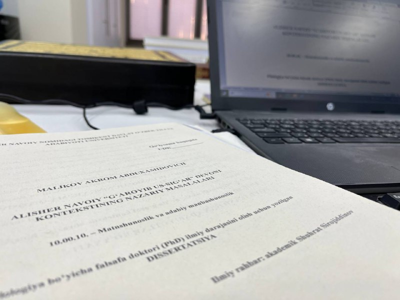
Илмий раҳбарим академик Шуҳрат Сирожиддинов диссертацияни кафедра муҳокамасига…
Илмий раҳбарим академик Шуҳрат Сирожиддинов диссертацияни кафедра муҳокамасига тавсия қилдилар. Илмга оид сўз айтиш жуда масъулиятли экан. Ҳар бир сўзни минг ўйлаб…
Оғриқни кучлироқ оғриқ унуттиради.
Оғриқни кучлироқ оғриқ унуттиради. Қайғуни ундан улканроғи даволайди. Ҳазратим Алишер Навоий айтганларидек: “Ғам йўқлиғи асру ғамдур”. Инсонни насиҳат ва ибратлар эмас…
Мен ҳам ушбу ахборот талотумида қолиб кетганимни инкор этмайман. Талотум шундайки…
Мен ҳам ушбу ахборот талотумида қолиб кетганимни инкор этмайман. Талотум шундайки, одамлар давлат ва раҳбарларига шубҳа ила қарайдилар, ҳукумат тизимидагиларнинг ҳам…

Ёзадиганларимнинг ҳаммаси “Ҳайрат ул-аброр”га ёзилган шарҳга бевосита алоқадор.
Ёзадиганларимнинг ҳаммаси “Ҳайрат ул-аброр”га ёзилган шарҳга бевосита алоқадор. Эсимни таниб, оқ ва қорани элас-элас фарқлар эканман, англадимки, ер юзида сиёсий кучлар…
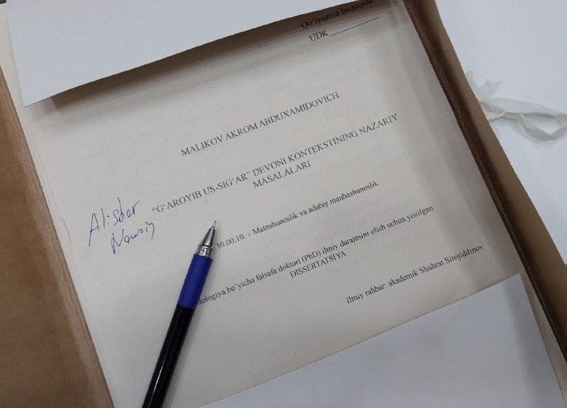
Бир йил эҳтимол кам вақт. Аммо ҳаётни ўзгартириш, дунёқараш устида ишлаб…
Бир йил эҳтимол кам вақт. Аммо ҳаётни ўзгартириш, дунёқараш устида ишлаб, ҳақиқатларни англаш учун етарли. Ассалому алайкум. 2021 йил январдан бошланган илмий тадқиқотим…
Hech narsa topilmadi.